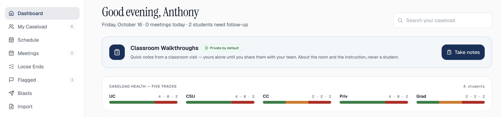

InfoFlow
InfoFlow is a FERPA-compliant web platform for school counselors. I'm one of three engineers on the team. I own our end-to-end testing: two Playwright suites, written in TypeScript, that run automatically on every pull request against live preview deployments, so bugs get caught before they reach schools. I build with an AI coding agent under a strict human-review process: I review every change before it merges and keep the agent out of the most sensitive parts of the codebase, like database security rules and migrations. We're preparing for a pilot with school districts across Southern California.